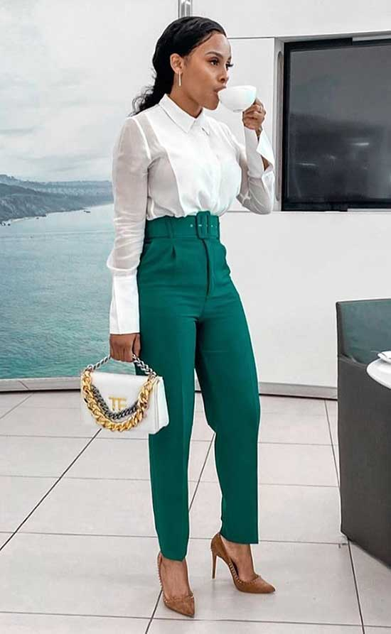

by Isa Monticellini
NYFW is fast approaching! If you were to guess what style was trending this September, what would it be? If all you had to go on was what we saw last Spring then you would have likely guessed gaudy. Not this Fall, though! I have it on good authority that we are going to see a swing towards the conservative.
If somehow you were quick, fortunate, or known some one who knows some one who had a ticket you may be asking yourself, "what should I wear? How do I match this year's take on conservative?" My advice: don't overthink it. Whether you are a man or woman, here are three tried and true tips in dressing to stand out in a theme that demands not to.